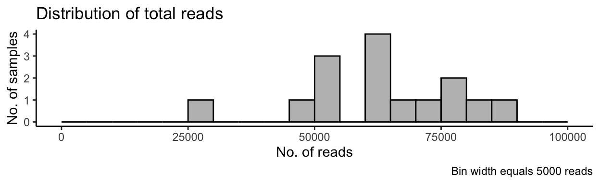
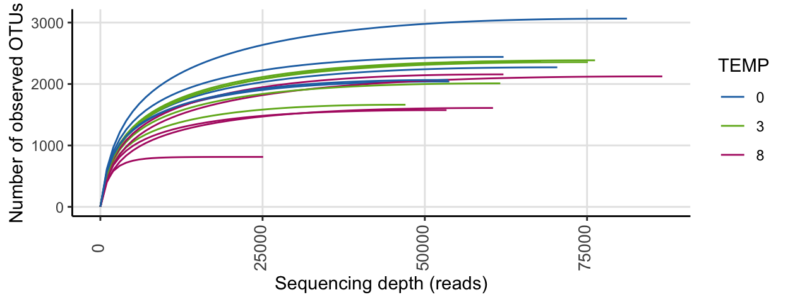
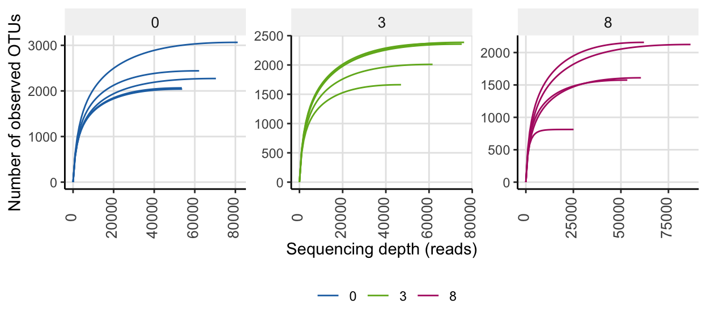
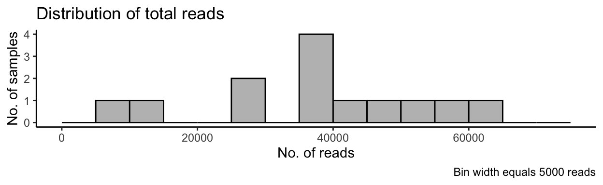
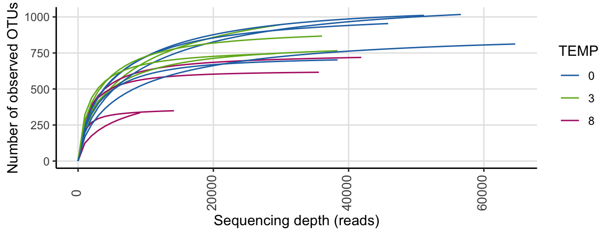
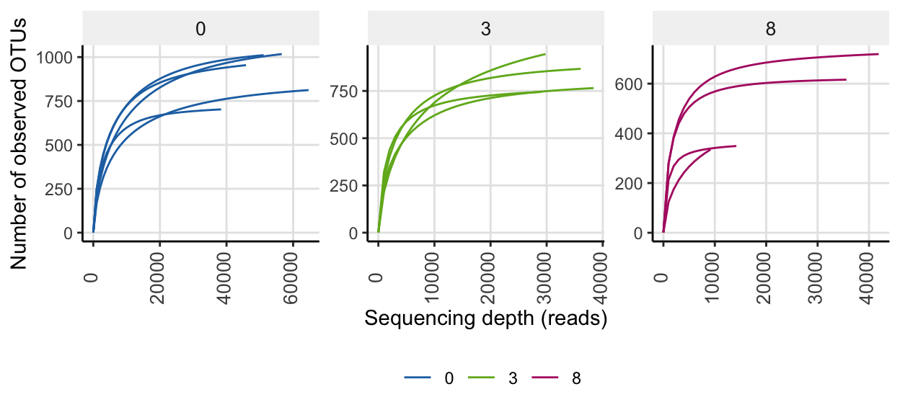

Click here for setup information.
knitr::opts_chunk$set(echo = TRUE, eval = FALSE)
set.seed(119)
#library(conflicted)
library(phyloseq); packageVersion("phyloseq")[1] '1.34.0'library(Biostrings); packageVersion("Biostrings")[1] '2.58.0'pacman::p_load(tidyverse, DT, ampvis2, hilldiv,
microbiome, phytools, phangorn,
pairwiseAdonis, codefolder, naniar,
labdsv, patchwork, agricolae,
install = FALSE, update = FALSE)
#pacman::p_depends(agricolae, local = TRUE)
#pacman::p_depends_reverse(agricolae, local = TRUE)
source("hack_code/div_test_plot_jjs.R")
source("hack_code/div_test_jjs.R")
options(scipen=999)
knitr::opts_current$get(c(
"cache",
"cache.path",
"cache.rebuild",
"dependson",
"autodep"
))$cache
[1] 0
$cache.path
[1] "alpha_cache/html5/"
$cache.rebuild
[1] FALSE
$dependson
NULL
$autodep
[1] FALSEHit the Show Code button to show the R code (hidden by default).
Synopsis
This workflow contains diversity assessments for the 2018 high temperature data sets. In order to run the workflow, you either need to first run the DADA2 Workflow for 2018 High Temp samples and the Data Preparation workflow or begin with the output files from the Data Preparation workflow. See the Data Availability page for complete details.
In this workflow…
16s rRNA
Read Distribution
Histogram of Read Counts
ssu18_max <- max(ssu18_samp_data$total_reads) +
(0.2 * max(ssu18_samp_data$total_reads))
ssu18_p_hist <- ggplot(ssu18_samp_data,
aes(ssu18_samp_data$total_reads)) +
geom_histogram(breaks = seq(0, ssu18_max, by = 5000),
col = "black", fill = "grey") +
labs(title = "Distribution of total reads",
caption = "Bin width equals 5000 reads") +
labs(x = "No. of reads", y = "No. of samples") +
theme_classic()
Rarefaction Curves
ssu18_rare_curve1 <- amp_rarecurve(
ssu18_amp_data,
stepsize = 1000,
color_by = "TEMP"
) + scale_colour_manual(values = swel_col)
For a quick comparison, we can facet the above data by Temperature.
ssu18_rare_curve2 <- amp_rarecurve(
ssu18_amp_data,
stepsize = 1000,
color_by = "TEMP",
facet_by = "TEMP",
facet_scales = "free"
) + scale_colour_manual(values = swel_col)
In the full data set, there was a minimum read count of 25088, a median of 62117 reads, and a maximum of 86600 reads.
After PIME filtering, there was a minimum read count of 10585, a median of 10585 reads, and a maximum of 10585 reads
After PERfect filtering, there was a minimum read count of 16697, a median of 50241 reads, and a maximum of 71026 reads
Alpha Diversity
To account for presence of rare sequence variants caused by sequencing errors or other technical artifacts, we use Hill numbers (Alberdi and Gilbert 2019a). Hill numbers allow the weight put on rare versus abundant sequence variants to be scaled while providing intuitive comparisons of diversity levels using “effective number of ASVs” as a measuring unit. This approach allows for balancing the over representation of rare ASVs that might be inflated due to sequencing errors.
We will then use Shapiro-Wilk tests to test for normalcy and then, depending on the results, either use parametric ANOVA or non-parametric Kruskal-Wallis to compare alpha diversity among treatments.
Calculate Hill Numbers
To calculate Hill numbers, we use the R package hilldiv (Alberdi and Gilbert 2019b). We calculate three metrics that put more or less weight on common species:
- Observed richness, where
q-value = 0. - Shannon exponential, which weighs ASVs by their frequency, where
q-value = 1. - Simpson multiplicative inverse, which over weighs abundant ASVs, where
q-value = 2.
We perform each analysis against the full data set, the PIME filtered data set, and the PERfect filtered data set using the function hill_div.
The command is as follows:
hill_div(count = x, qvalue = i, tree = ultrametric_tree), where x is the sample by ASV table, i is the q-value corresponding to the metric of interest and tree is an ultrametric formatted phylogenetic tree (see below).
We first transform all the data to relative abundance values, and compute new trees.
ssu18_alpha_ds <- c("ssu18_ps_work", "ssu18_ps_pime", "ssu18_ps_perfect",
"ssu18_ps_work_otu", "ssu18_ps_pime_otu", "ssu18_ps_perfect_otu")
objects()
ssu18_ps_work@phy_tree <- NULL
ssu18_ps_pime@phy_tree <- NULL
ssu18_ps_perfect@phy_tree <- NULL
ssu18_ps_work_otu@phy_tree <- NULL
ssu18_ps_pime_otu@phy_tree <- NULL
ssu18_ps_perfect_otu@phy_tree <- NULL# tmp_ps <- transform_sample_counts(get(i), function(otu) 1e5 otu/sum(otu))
for (i in ssu18_alpha_ds) {
tmp_ps <- transform_sample_counts(get(i), function(otu) otu/sum(otu))
tmp_ps@phy_tree <- NULL
tmp_tree <- rtree(ntaxa(tmp_ps), rooted = TRUE,
tip.label = taxa_names(tmp_ps))
tmp_ps_norm <- merge_phyloseq(tmp_ps, sample_data, tmp_tree)
tmp_asv <- data.frame(t(otu_table(tmp_ps_norm)))
tmp_ps_name <- purrr::map_chr(i, ~ paste0(., "_norm"))
assign(tmp_ps_name, tmp_ps_norm)
tmp_asv_name <- purrr::map_chr(i, ~ paste0(., "_tu"))
assign(tmp_asv_name, tmp_asv)
rm(list = ls(pattern = "tmp_"))
}
objects()No phylogenetic tree
Next, we run the analysis for all three metrics on the data sets without a tree.
qvalue <- c(0,1,2)
for (i in qvalue) {
for (j in ssu18_alpha_ds) {
tmp_asv <- get(purrr::map_chr(j, ~ paste0(., "_tu")))
tmp_df <- data.frame(hill_div(tmp_asv, qvalue = i))
tmp_df <- tmp_df %>% dplyr::rename("tmp_name" = 1) %>%
tibble::rownames_to_column("SamName")
tmp_name <- purrr::map_chr(j, ~ paste0(., "_h", i))
print(tmp_name)
assign(tmp_name, tmp_df)
rm(list = ls(pattern = "tmp_"))
}
}
objects(pattern = "_h")And make summary tables to add back into each ps object.
for (i in ssu18_alpha_ds) {
tmp_obs <- get(purrr::map_chr(i, ~ paste0(., "_h0")))
tmp_sha <- get(purrr::map_chr(i, ~ paste0(., "_h1")))
tmp_sim <- get(purrr::map_chr(i, ~ paste0(., "_h2")))
tmp_hill <- dplyr::left_join(tmp_obs, tmp_sha, by = "SamName") %>%
dplyr::left_join(., tmp_sim, by = "SamName") %>%
dplyr::rename("Observed" = 2, "Shannon_exp" = 3, "InvSimpson" = 4)
tmp_name <- purrr::map_chr(i, ~ paste0(., "_hill"))
assign(tmp_name, tmp_hill)
rm(list = ls(pattern = "tmp_"))
}
objects(pattern = "_hill")And then create the new objects with the diversity data.
With a phylogenetic tree
We can also run the tests using the phylogenetic tree to assess lineage diversity rather than ASV diversity for the filtered data sets. We do a quick check to ensure the ASV names in the ASV table and the tip names in the new phylogenetic tree are identical.
rm(i, j)
ssu18_alpha_ds_tree <- c("ssu18_ps_pime", "ssu18_ps_pime_otu",
"ssu18_ps_perfect", "ssu18_ps_perfect_otu")
qvalue <- c(0,1,2)
for (i in qvalue) {
for (j in ssu18_alpha_ds_tree) {
tmp_asv <- get(purrr::map_chr(j, ~ paste0(., "_tu")))
tmp_tree <- get(purrr::map_chr(j, ~ paste0(., "_tree_ult")))
tmp_df <- data.frame(hill_div(tmp_asv, qvalue = i, tree = tmp_tree))
tmp_df <- tmp_df %>% dplyr::rename("tmp_name" = 1) %>%
tibble::rownames_to_column("SamName")
tmp_name <- purrr::map_chr(j, ~ paste0(., "_ht", i))
print(tmp_name)
assign(tmp_name, tmp_df)
rm(list = ls(pattern = "tmp_"))
}
}ssu18_alpha_ds_tree_pime <- c("ssu18_ps_pime", "ssu18_ps_pime_otu")
for (i in ssu18_alpha_ds_tree_pime) {
tmp_obs <- get(purrr::map_chr(i, ~ paste0(., "_ht0")))
tmp_sha <- get(purrr::map_chr(i, ~ paste0(., "_ht1")))
tmp_sim <- get(purrr::map_chr(i, ~ paste0(., "_ht2")))
tmp_hill <- dplyr::left_join(tmp_obs, tmp_sha, by = "SamName") %>%
dplyr::left_join(., tmp_sim, by = "SamName") %>%
dplyr::rename("Observed_pit" = 2, "Shannon_exp_pit" = 3, "InvSimpson_pit" = 4)
tmp_name <- purrr::map_chr(i, ~ paste0(., "_hill_t"))
assign(tmp_name, tmp_hill)
rm(list = ls(pattern = "tmp_"))
}
ssu18_alpha_ds_tree_perfect <- c("ssu18_ps_perfect", "ssu18_ps_perfect_otu")
for (i in ssu18_alpha_ds_tree_perfect) {
tmp_obs <- get(purrr::map_chr(i, ~ paste0(., "_ht0")))
tmp_sha <- get(purrr::map_chr(i, ~ paste0(., "_ht1")))
tmp_sim <- get(purrr::map_chr(i, ~ paste0(., "_ht2")))
tmp_hill <- dplyr::left_join(tmp_obs, tmp_sha, by = "SamName") %>%
dplyr::left_join(., tmp_sim, by = "SamName") %>%
dplyr::rename("Observed_pet" = 2, "Shannon_exp_pet" = 3, "InvSimpson_pet" = 4)
tmp_name <- purrr::map_chr(i, ~ paste0(., "_hill_t"))
assign(tmp_name, tmp_hill)
rm(list = ls(pattern = "tmp_"))
}Sample Summary
Now we summarize the data for each sample against all three metrics. The table contains the results of ASV diversity estimates from the full data set and the PIME filtered data set, as well as the lineage diversity from the PIME data set.
The suffix _pi indicates metrics for the PIME data set and the suffix _pit indicates the lineage diversity for the PIME data set.
The suffix _pe indicates metrics for the PERfect data set and the suffix _pet indicates the lineage diversity for the PERfect data set.
ASV Hill Summary
OTU Hill Summary
Normality Tests
Before running significance tests, we need to know if data is normally distributed, which will tell use whether to use a parametric or non-parametric test. To test if the data are normally distributed, we use the Shapiro-Wilk Normality test and the Bartlett Test of Homogeneity of Variances.
If the p-values are both not significant (p > 0.05) from the tests, we accept the null hypothesis (that the results are normally distributed) and test for significance between samples using an ANOVA. If the p-values are both significant (p < 0.05), we reject the null hypothesis (that the results are normally distributed) and test for significance between samples using Kruskal-Wallis (non-parametric equivalent of ANOVA).
The commands are as follows:
shapiro.test(x), where x is a numeric vector of alpha diversity values from the sample data table.
bartlett.test(Value ~ Group, data = df) Where Value is the metric of interest, Group in the treatment to compare, and df is the data frame.
First the Shapiro-Wilk Normality test.
ssu18_div_tab <- ssu18_samp_data_tab
ssu18_shap_tests_asv <- c()
for (i in colnames(ssu18_div_tab[,7:ncol(ssu18_div_tab)])) {
tmp_name <- purrr::map_chr(i, ~ paste0("ssu18_shap_asv_", .))
ssu18_shap_tests_asv <- append(ssu18_shap_tests_asv, tmp_name)
tmp_test <- eval(shapiro.test(ssu18_div_tab[[i]]))
tmp_test$data.name <- tmp_name
assign(tmp_name, tmp_test)
rm(list = ls(pattern = "tmp_"))
}
ssu18_div_tab <- ssu18_samp_data_otu_tab
ssu18_shap_tests_otu <- c()
for (i in colnames(ssu18_div_tab[,7:ncol(ssu18_div_tab)])) {
tmp_name <- purrr::map_chr(i, ~ paste0("ssu18_shap_otu_", .))
ssu18_shap_tests_otu <- append(ssu18_shap_tests_otu, tmp_name)
tmp_test <- eval(shapiro.test(ssu18_div_tab[[i]]))
tmp_test$data.name <- tmp_name
assign(tmp_name, tmp_test)
rm(list = ls(pattern = "tmp_"))
}
objects(pattern = "shap_")And then the Bartlett Test of Homogeneity of Variances.
ssu18_div_tab_asv <- ssu18_samp_data_tab
ssu18_bart_tests_asv <- c()
for (i in colnames(ssu18_div_tab_asv[,7:ncol(ssu18_div_tab_asv)])) {
tmp_name <- purrr::map_chr(i, ~ paste0("ssu18_bart_asv_", .))
ssu18_bart_tests_asv <- append(ssu18_bart_tests_asv, tmp_name)
tmp_test <- eval(bartlett.test(ssu18_div_tab_asv[[i]] ~ TEMP, data = ssu18_div_tab_asv))
tmp_test$data.name <- tmp_name
assign(tmp_name, tmp_test)
rm(list = ls(pattern = "tmp_"))
}
ssu18_div_tab_otu <- ssu18_samp_data_otu_tab
ssu18_bart_tests_otu <- c()
for (i in colnames(ssu18_div_tab_otu[,7:ncol(ssu18_div_tab_otu)])) {
tmp_name <- purrr::map_chr(i, ~ paste0("ssu18_bart_otu_", .))
ssu18_bart_tests_otu <- append(ssu18_bart_tests_otu, tmp_name)
tmp_test <- eval(bartlett.test(ssu18_div_tab_otu[[i]] ~ TEMP, data = ssu18_div_tab_otu))
tmp_test$data.name <- tmp_name
assign(tmp_name, tmp_test)
rm(list = ls(pattern = "tmp_"))
}
objects(pattern = "_bart_")Here we see which Shapiro-Wilk Normality and Bartlett tests were significant and which were not for the ASV analysis?
for (i in colnames(ssu18_div_tab_asv[,7:15])) {
tmp_get_shap <- get(purrr::map_chr(i, ~ paste0("ssu18_shap_asv_", .)))
tmp_shap_p <- round(tmp_get_shap[[2]], 4)
tmp_get_bart <- get(purrr::map_chr(i, ~ paste0("ssu18_bart_asv_", .)))
tmp_bart_p <- round(tmp_get_bart[[3]], 4)
tmp_res <- eval(isTRUE(tmp_get_shap[[2]] > 0.05) & isTRUE(tmp_get_bart[[3]] > 0.05))
tmp_print <- c(i, "Shapiro p-value =", tmp_shap_p,
"Bartlett p-value =", tmp_bart_p,
"Are both p-values > 0.05?", tmp_res)
cat(tmp_print,"\n")
rm(list = ls(pattern = "tmp_"))
}Observed Shapiro p-value = 0.2682 Bartlett p-value = 0.5992 Are both p-values > 0.05? TRUE
Observed_pi Shapiro p-value = 0.0552 Bartlett p-value = 0.7551 Are both p-values > 0.05? TRUE
Observed_pe Shapiro p-value = 0.1905 Bartlett p-value = 0.437 Are both p-values > 0.05? TRUE
Observed_pit Shapiro p-value = 0.0299 Bartlett p-value = 0.369 Are both p-values > 0.05? FALSE
Observed_pet Shapiro p-value = 0.0814 Bartlett p-value = 0.3126 Are both p-values > 0.05? TRUE
Shannon_exp Shapiro p-value = 0.994 Bartlett p-value = 0.4904 Are both p-values > 0.05? TRUE
Shannon_exp_pi Shapiro p-value = 0.0366 Bartlett p-value = 0.88 Are both p-values > 0.05? FALSE
Shannon_exp_pit Shapiro p-value = 0.0084 Bartlett p-value = 0.0018 Are both p-values > 0.05? FALSE
Shannon_exp_pe Shapiro p-value = 0.3311 Bartlett p-value = 0.1592 Are both p-values > 0.05? TRUE And which of the metrics are significant for the OTU analysis?
for (i in colnames(ssu18_div_tab_otu[,7:15])) {
tmp_get_shap <- get(purrr::map_chr(i, ~ paste0("ssu18_shap_otu_", .)))
tmp_shap_p <- round(tmp_get_shap[[2]], 4)
tmp_get_bart <- get(purrr::map_chr(i, ~ paste0("ssu18_bart_otu_", .)))
tmp_bart_p <- round(tmp_get_bart[[3]], 4)
tmp_res <- eval(isTRUE(tmp_get_shap[[2]] > 0.05) & isTRUE(tmp_get_bart[[3]] > 0.05))
tmp_print <- c(i, "Shapiro p-value =", tmp_shap_p,
"Bartlett p-value =", tmp_bart_p,
"Are both p-values > 0.05?", tmp_res)
cat(tmp_print,"\n")
rm(list = ls(pattern = "tmp_"))
}Observed Shapiro p-value = 0.191 Bartlett p-value = 0.4813 Are both p-values > 0.05? TRUE
Observed_pi Shapiro p-value = 0.0843 Bartlett p-value = 0.7803 Are both p-values > 0.05? TRUE
Observed_pe Shapiro p-value = 0.7849 Bartlett p-value = 0.5749 Are both p-values > 0.05? TRUE
Observed_pit Shapiro p-value = 0.049 Bartlett p-value = 0.4263 Are both p-values > 0.05? FALSE
Observed_pet Shapiro p-value = 0.5626 Bartlett p-value = 0.4748 Are both p-values > 0.05? TRUE
Shannon_exp Shapiro p-value = 0.913 Bartlett p-value = 0.2558 Are both p-values > 0.05? TRUE
Shannon_exp_pi Shapiro p-value = 0.1312 Bartlett p-value = 0.7164 Are both p-values > 0.05? TRUE
Shannon_exp_pit Shapiro p-value = 0.1287 Bartlett p-value = 0.0417 Are both p-values > 0.05? FALSE
Shannon_exp_pe Shapiro p-value = 0.9563 Bartlett p-value = 0.1316 Are both p-values > 0.05? TRUE So wherever the value of both p-values in > 0.05 we can use an ANOVA, otherwise we use Kruskal-Wallis.
Significance Tests
To begin, we need to create a hierarchy variable; a two-column matrix specifying the relationship between samples (first column) and groups (second column).
ssu18_hill_hier <- ssu18_samp_data_tab
ssu18_hill_hier <- ssu18_hill_hier %>% dplyr::select("sample_id", "TEMP") %>%
tibble::remove_rownames()
ssu18_hill_hier <- ssu18_hill_hier[order(ssu18_hill_hier$TEMP), ]
ssu18_hill_hier$TEMP = paste(ssu18_hill_hier$TEMP, 'C', sep='')
ssu18_hill_hier <- ssu18_hill_hier %>% tibble::remove_rownames()
saveRDS(ssu18_hill_hier, "files/alpha/rdata/ssu18_hill_hier.rds")Again, we start by testing significance of ASV diversity for the full data set against each of the three metrics using the div_test function.
The command is as follows:
div_test(countable = x, qvalue = i, hierarchy = hier, tree = ultrametric_tree, posthoc = TRUE), where x is ASV by sample table, i is the q-value corresponding to the metric of interest, hier is the hierarchy matrix, tree is an ultrametric formatted phylogenetic tree (see below), and posthoc indicates whether to run post hoc pairwise analyses.
qvalue <- c(0,1,2)
for (i in ssu18_alpha_ds) {
for (j in qvalue) {
tmp_get <- get(purrr::map_chr(i, ~ paste0(., "_tu")))
tmp_test <- div_test(tmp_get, qvalue = j,
hierarchy = ssu18_hill_hier,
posthoc = TRUE)
tmp_name <- purrr::map_chr(i, ~ paste0(., "_q", j, "_adt"))
print(tmp_name)
assign(tmp_name, tmp_test)
rm(list = ls(pattern = "tmp_"))
}
}And then test significance of lineage diversity for the PIME filtered data sets.
ssu18_alpha_ds_tree <- c("ssu18_ps_pime", "ssu18_ps_pime_otu", "ssu18_ps_perfect", "ssu18_ps_perfect_otu")
qvalue <- c(0,1,2)
for (i in ssu18_alpha_ds_tree) {
for (j in qvalue) {
tmp_get <- get(purrr::map_chr(i, ~ paste0(., "_tu")))
tmp_tree <- get(purrr::map_chr(i, ~ paste0(., "_tree_ult")))
tmp_test <- div_test(tmp_get, qvalue = j,
hierarchy = ssu18_hill_hier,
posthoc = TRUE,
tree = tmp_tree)
tmp_name <- purrr::map_chr(i, ~ paste0(., "_t_q", j, "_adt"))
print(tmp_name)
assign(tmp_name, tmp_test)
rm(list = ls(pattern = "tmp_"))
}
}Summary
| dataset | type | lineage | metric | q-value | normality p-value | homogeneity p-value | method | posthoc method | posthoc p-value |
|---|---|---|---|---|---|---|---|---|---|
| FULL | ASV | No | Observed | 0 | 0.2681998 | 0.5991626 | ANOVA | Tukey post-hoc test | 0.0605074 |
| FULL | ASV | No | Shannon exponential | 1 | 0.9939992 | 0.4904235 | ANOVA | Tukey post-hoc test | 0.0000627 |
| FULL | ASV | No | Inverse Simpson | 2 | 0.5839636 | 0.1546384 | ANOVA | Tukey post-hoc test | 0.0000467 |
| PIME | ASV | No | Observed | 0 | 0.0552211 | 0.7550599 | ANOVA | Tukey post-hoc test | 0.0000014 |
| PIME | ASV | No | Shannon exponential | 1 | 0.0365560 | 0.8800330 | Kruskal-Wallis Test | Dunn test with Benjamini-Hochberg correction | 0.0019305 |
| PIME | ASV | No | Inverse Simpson | 2 | 0.3700798 | 0.3713868 | ANOVA | Tukey post-hoc test | 0.0000010 |
| PERfect | ASV | No | Observed | 0 | 0.1905324 | 0.4370236 | ANOVA | Tukey post-hoc test | 0.0504543 |
| PERfect | ASV | No | Shannon exponential | 1 | 0.3311190 | 0.1591881 | ANOVA | Tukey post-hoc test | 0.0000071 |
| PERfect | ASV | No | Inverse Simpson | 2 | 0.7467994 | 0.3483932 | ANOVA | Tukey post-hoc test | 0.0000032 |
| PIME | ASV | Yes | Observed | 0 | 0.0298648 | 0.3690373 | Kruskal-Wallis Test | Dunn test with Benjamini-Hochberg correction | 0.0075214 |
| PIME | ASV | Yes | Shannon exponential | 1 | 0.0084235 | 0.0017782 | Kruskal-Wallis Test | Dunn test with Benjamini-Hochberg correction | 0.0019305 |
| PIME | ASV | Yes | Inverse Simpson | 2 | 0.0011146 | 0.0001765 | Kruskal-Wallis Test | Dunn test with Benjamini-Hochberg correction | 0.0044716 |
| PERfect | ASV | Yes | Observed | 0 | 0.0814245 | 0.3125886 | ANOVA | Tukey post-hoc test | 0.0645723 |
| PERfect | ASV | Yes | Shannon exponential | 1 | 0.0125488 | 0.0001550 | Kruskal-Wallis Test | Dunn test with Benjamini-Hochberg correction | 0.0019305 |
| PERfect | ASV | Yes | Inverse Simpson | 2 | 0.0002360 | 0.0002044 | Kruskal-Wallis Test | Dunn test with Benjamini-Hochberg correction | 0.1339887 |
| FULL | OTU | No | Observed | 0 | 0.1909930 | 0.4813418 | ANOVA | Tukey post-hoc test | 0.0559591 |
| FULL | OTU | No | Shannon exponential | 1 | 0.9130116 | 0.2557555 | ANOVA | Tukey post-hoc test | 0.0000628 |
| FULL | OTU | No | Inverse Simpson | 2 | 0.3401696 | 0.1988375 | ANOVA | Tukey post-hoc test | 0.0001413 |
| PIME | OTU | No | Observed | 0 | 0.0842990 | 0.7802781 | ANOVA | Tukey post-hoc test | 0.0000011 |
| PIME | OTU | No | Shannon exponential | 1 | 0.1312023 | 0.7163842 | ANOVA | Tukey post-hoc test | 0.0000000 |
| PIME | OTU | No | Inverse Simpson | 2 | 0.5348064 | 0.2986110 | ANOVA | Tukey post-hoc test | 0.0000069 |
| PERfect | OTU | No | Observed | 0 | 0.7848775 | 0.5749074 | ANOVA | Tukey post-hoc test | 0.0186153 |
| PERfect | OTU | No | Shannon exponential | 1 | 0.9563337 | 0.1316418 | ANOVA | Tukey post-hoc test | 0.0000204 |
| PERfect | OTU | No | Inverse Simpson | 2 | 0.4550383 | 0.2823848 | ANOVA | Tukey post-hoc test | 0.0000616 |
| PIME | OTU | Yes | Observed | 0 | 0.0490294 | 0.4263028 | Kruskal-Wallis Test | Dunn test with Benjamini-Hochberg correction | 0.0037350 |
| PIME | OTU | Yes | Shannon exponential | 1 | 0.1287099 | 0.0416755 | Kruskal-Wallis Test | Dunn test with Benjamini-Hochberg correction | 0.0019305 |
| PIME | OTU | Yes | Inverse Simpson | 2 | 0.0005127 | 0.0007859 | Kruskal-Wallis Test | Dunn test with Benjamini-Hochberg correction | 0.0076734 |
| PERfect | OTU | Yes | Observed | 0 | 0.5626109 | 0.4747618 | ANOVA | Tukey post-hoc test | 0.0215911 |
| PERfect | OTU | Yes | Shannon exponential | 1 | 0.0946729 | 0.0053474 | Kruskal-Wallis Test | Dunn test with Benjamini-Hochberg correction | 0.0019305 |
| PERfect | OTU | Yes | Inverse Simpson | 2 | 0.0002749 | 0.0002655 | Kruskal-Wallis Test | Dunn test with Benjamini-Hochberg correction | 0.0039660 |
Summary of significant tests.
PostHoc Analyses (ASV data sets)
First let’s check the results of each posthoc analysis.
Detailed results of PostHoc Analyses for each metric
Observed (q-value = 0)
[1] "FULL (Observed)"
[1] "Tukey post-hoc test"
diff lwr upr p.adj
3C-0C -219.6 -956.946 517.74597 0.71329233
8C-0C -721.0 -1458.346 16.34597 0.05546473
8C-3C -501.4 -1238.746 235.94597 0.20658985[1] "PIME (Observed)"
[1] "Tukey post-hoc test"
diff lwr upr p.adj
3C-0C -46.6 -140.1306 46.9306 0.406733563435
8C-0C -325.6 -419.1306 -232.0694 0.000002206313
8C-3C -279.0 -372.5306 -185.4694 0.000011005557[1] "PERfect (Observed)"
[1] "Tukey post-hoc test"
diff lwr upr p.adj
3C-0C 2.4 -191.8227 196.62267 0.99940103
8C-0C -174.2 -368.4227 20.02267 0.08059254
8C-3C -176.6 -370.8227 17.62267 0.07616681[1] "PIME Lineage (Observed)"
[1] "Dunn test with Benjamini-Hochberg correction"
Z P.unadj P.adj
0C-3C 0.6363961 0.524518280 0.52451828
0C-8C 2.9698485 0.002979467 0.00893840
3C-8C 2.3334524 0.019624415 0.02943662[1] "PERfect Lineage (Observed)"
[1] "Tukey post-hoc test"
diff lwr upr p.adj
3C-0C 1.170489 -29.44297 31.783949 0.99428278
8C-0C -25.584935 -56.19839 5.028525 0.10619378
8C-3C -26.755424 -57.36888 3.858036 0.08944194Shannon exponential (q-value = 1)
[1] "FULL (Shannon exponential)"
[1] "Tukey post-hoc test"
diff lwr upr p.adj
3C-0C -246.4375 -442.9939 -49.88101 0.01492642034
8C-0C -511.4071 -707.9635 -314.85066 0.00004295672
8C-3C -264.9696 -461.5261 -68.41321 0.00950353162[1] "PIME (Shannon exponential)"
[1] "Dunn test with Benjamini-Hochberg correction"
Z P.unadj P.adj
0C-3C 1.767767 0.077099872 0.077099872
0C-8C 3.535534 0.000406952 0.001220856
3C-8C 1.767767 0.077099872 0.115649808[1] "PERfect (Shannon exponential)"
[1] "Tukey post-hoc test"
diff lwr upr p.adj
3C-0C -82.87871 -155.6134 -10.14407 0.025808833615
8C-0C -232.15045 -304.8851 -159.41581 0.000005488596
8C-3C -149.27174 -222.0064 -76.53710 0.000385348747[1] "PIME Lineage (Shannon exponential)"
[1] "Dunn test with Benjamini-Hochberg correction"
Z P.unadj P.adj
0C-3C 1.767767 0.077099872 0.077099872
0C-8C 3.535534 0.000406952 0.001220856
3C-8C 1.767767 0.077099872 0.115649808[1] "PERfect Lineage (Shannon exponential)"
[1] "Dunn test with Benjamini-Hochberg correction"
Z P.unadj P.adj
0C-3C 1.767767 0.077099872 0.077099872
0C-8C 3.535534 0.000406952 0.001220856
3C-8C 1.767767 0.077099872 0.115649808Simpson multiplicative (i.e., Inverse Simpson) (q-value = 2)
[1] "FULL (Inverse Simpson)"
[1] "Tukey post-hoc test"
diff lwr upr p.adj
3C-0C -157.7331 -251.7760 -63.69027 0.00202540187
8C-0C -249.3938 -343.4367 -155.35097 0.00003566326
8C-3C -91.6607 -185.7036 2.38217 0.05628905499[1] "PIME (Inverse Simpson)"
[1] "Tukey post-hoc test"
diff lwr upr p.adj
3C-0C -61.82853 -93.26452 -30.39255 0.000556162049
8C-0C -122.59975 -154.03574 -91.16377 0.000000651479
8C-3C -60.77122 -92.20720 -29.33524 0.000643758728[1] "PERfect (Inverse Simpson)"
[1] "Tukey post-hoc test"
diff lwr upr p.adj
3C-0C -80.17581 -122.1927 -38.15894 0.000718157610
8C-0C -146.57155 -188.5884 -104.55467 0.000002158578
8C-3C -66.39574 -108.4126 -24.37887 0.003172202683[1] "PIME Lineage (Inverse Simpson)"
[1] "Dunn test with Benjamini-Hochberg correction"
Z P.unadj P.adj
0C-3C 1.202082 0.229331942 0.22933194
0C-8C 3.252691 0.001143177 0.00342953
3C-8C 2.050610 0.040304974 0.06045746[1] "PERfect Lineage (Inverse Simpson)"
[1] "Dunn test with Benjamini-Hochberg correction"
Z P.unadj P.adj
0C-3C 0.4242641 0.6713732 0.6713732
0C-8C 1.9091883 0.0562378 0.1687134
3C-8C 1.4849242 0.1375639 0.2063458PostHoc Analyses (OTU data sets)
Again, let’s check the results of each posthoc analysis.
Detailed results of PostHoc Analyses for each metric
Observed (q-value = 0)
[1] "FULL (Observed)"
[1] "Tukey post-hoc test"
diff lwr upr p.adj
3C-0C -223.2 -899.0877 452.6876931 0.66188885
8C-0C -676.4 -1352.2877 -0.5123069 0.04982256
8C-3C -453.2 -1129.0877 222.6876931 0.21466785[1] "PIME (Observed)"
[1] "Tukey post-hoc test"
diff lwr upr p.adj
3C-0C -70.2 -170.0332 29.63325 0.187886405687
8C-0C -363.8 -463.6332 -263.96675 0.000001355009
8C-3C -293.6 -393.4332 -193.76675 0.000012714871[1] "PERfect (Observed)"
[1] "Tukey post-hoc test"
diff lwr upr p.adj
3C-0C -33.2 -238.8014 172.4014356 0.90356021
8C-0C -239.2 -444.8014 -33.5985644 0.02301574
8C-3C -206.0 -411.6014 -0.3985644 0.04954739[1] "PIME Lineage (Observed)"
[1] "Dunn test with Benjamini-Hochberg correction"
Z P.unadj P.adj
0C-3C 1.343503 0.179109193 0.179109193
0C-8C 3.323402 0.000889267 0.002667801
3C-8C 1.979899 0.047714880 0.071572320[1] "PERfect Lineage (Observed)"
[1] "Tukey post-hoc test"
diff lwr upr p.adj
3C-0C -3.93427 -34.55582 26.6872783 0.93762030
8C-0C -34.36527 -64.98682 -3.7437233 0.02801955
8C-3C -30.43100 -61.05255 0.1905472 0.05147974Shannon exponential (q-value = 1)
[1] "FULL (Shannon exponential)"
[1] "Tukey post-hoc test"
diff lwr upr p.adj
3C-0C -213.3956 -351.0524 -75.738845 0.00364944549
8C-0C -355.8491 -493.5058 -218.192283 0.00004574417
8C-3C -142.4534 -280.1102 -4.796657 0.04243825218[1] "PIME (Shannon exponential)"
[1] "Tukey post-hoc test"
diff lwr upr p.adj
3C-0C -106.2766 -144.4684 -68.08487 0.000022165913123
8C-0C -227.7311 -265.9228 -189.53930 0.000000005600612
8C-3C -121.4544 -159.6462 -83.26266 0.000005700395158[1] "PERfect (Shannon exponential)"
[1] "Tukey post-hoc test"
diff lwr upr p.adj
3C-0C -119.8531 -195.8804 -43.82579 0.00322839921
8C-0C -221.6167 -297.6440 -145.58937 0.00001390846
8C-3C -101.7636 -177.7909 -25.73628 0.00994714139[1] "PIME Lineage (Shannon exponential)"
[1] "Dunn test with Benjamini-Hochberg correction"
Z P.unadj P.adj
0C-3C 1.767767 0.077099872 0.077099872
0C-8C 3.535534 0.000406952 0.001220856
3C-8C 1.767767 0.077099872 0.115649808[1] "PERfect Lineage (Shannon exponential)"
[1] "Dunn test with Benjamini-Hochberg correction"
Z P.unadj P.adj
0C-3C 1.767767 0.077099872 0.077099872
0C-8C 3.535534 0.000406952 0.001220856
3C-8C 1.767767 0.077099872 0.115649808Simpson multiplicative (i.e., Inverse Simpson) (q-value = 2)
[1] "FULL (Inverse Simpson)"
[1] "Tukey post-hoc test"
diff lwr upr p.adj
3C-0C -110.22327 -174.9669 -45.47960 0.0018046838
8C-0C -148.99273 -213.7364 -84.24906 0.0001376732
8C-3C -38.76946 -103.5131 25.97421 0.2840928368[1] "PIME (Inverse Simpson)"
[1] "Tukey post-hoc test"
diff lwr upr p.adj
3C-0C -69.89475 -104.49486 -35.294650 0.000442123349
8C-0C -111.09683 -145.69693 -76.496726 0.000005158065
8C-3C -41.20208 -75.80218 -6.601974 0.020186238381[1] "PERfect (Inverse Simpson)"
[1] "Tukey post-hoc test"
diff lwr upr p.adj
3C-0C -82.09422 -128.29789 -35.89054 0.00128813757
8C-0C -117.39071 -163.59439 -71.18704 0.00005406988
8C-3C -35.29649 -81.50017 10.90718 0.14542596882[1] "PIME Lineage (Inverse Simpson)"
[1] "Dunn test with Benjamini-Hochberg correction"
Z P.unadj P.adj
0C-3C 1.343503 0.179109193 0.179109193
0C-8C 3.111270 0.001862846 0.005588539
3C-8C 1.767767 0.077099872 0.115649808[1] "PERfect Lineage (Inverse Simpson)"
[1] "Dunn test with Benjamini-Hochberg correction"
Z P.unadj P.adj
0C-3C 1.767767 0.077099872 0.115649808
0C-8C 3.323402 0.000889267 0.002667801
3C-8C 1.555635 0.119794930 0.119794930Now we can plot the results from the posthoc analyses for each metric and data set using the function div_test_plot_jjs. I modified the original function (div_test_plot) to control a little of the formatting.
The command is as follows:
div_test_plot(divtest = x, chart = "type", colour = col.pal, posthoc = TRUE, threshold = value)), where x is the results from the div_test function, "type" is chart type (box, jitter, or violin),colour is is a color palette, posthoc indicates whether to run posthoc pairwise analyses, and value is the maximum p-value to show in pairwise posthoc results. WARNING if none of the posthoc results are below the specified threshold, the function will throw an error. Therefore, until this is fixed, all posthoc values are shown.
source("hack_code/div_test_plot_jjs.R")
rm(list=ls(pattern="_adt_plot"))
for (i in objects(pattern="_adt")) {
tmp_name <- purrr::map_chr(i, ~ paste0(., "_plot"))
tmp_get <- get(i)
tmp_df <- div_test_plot_jjs(tmp_get, chart = "box",
colour = swel_col, posthoc = TRUE)
tmp_df <- ggpar(tmp_df, legend = "none")
print(tmp_name)
assign(tmp_name, tmp_df)
rm(list = ls(pattern = "tmp_"))
}Alpha Diversity Plots
Posthoc adjusted p-values given for each pairwise comparison.
ASV data sets

Figure 1: Top row = Observed; middle row = Shannon exponential; bottom row = Inverse Simpson.
OTU data sets

Figure 2: Top row = Observed; middle row = Shannon exponential; bottom row = Inverse Simpson.
ITS
Read Distribution
Histogram of Read Counts
its18_max <- max(its18_samp_data$total_reads) +
(0.2 * max(its18_samp_data$total_reads))
its18_p_hist <- ggplot(its18_samp_data,
aes(its18_samp_data$total_reads)) +
geom_histogram(breaks = seq(0, its18_max, by = 5000),
col = "black", fill = "grey") +
labs(title = "Distribution of total reads",
caption = "Bin width equals 5000 reads") +
labs(x = "No. of reads", y = "No. of samples") +
theme_classic()
Rarefaction Curves
its18_rare_curve1 <- amp_rarecurve(
its18_amp_data,
stepsize = 1000,
color_by = "TEMP"
) + scale_colour_manual(values = swel_col)
For a quick comparison, we can facet the above data by Temperature.
its18_rare_curve2 <- amp_rarecurve(
its18_amp_data,
stepsize = 1000,
color_by = "TEMP",
facet_by = "TEMP",
facet_scales = "free"
) + scale_colour_manual(values = swel_col)
In the full data set, there was a minimum read count of 9172, a median of 38371 reads, and a maximum of 64636 reads.
After PIME filtering, there was a minimum read count of 3442, a median of 3442 reads, and a maximum of 3442 reads
After PERfect filtering, there was a minimum read count of 7286, a median of 24313 reads, and a maximum of 56772 reads
Alpha Diversity
To account for presence of rare sequence variants caused by sequencing errors or other technical artifacts, we use Hill numbers (Alberdi and Gilbert 2019a). Hill numbers allow the weight put on rare versus abundant sequence variants to be scaled while providing intuitive comparisons of diversity levels using “effective number of ASVs” as a measuring unit. This approach allows for balancing the over representation of rare ASVs that might be inflated due to sequencing errors.
We will then use Shapiro-Wilk tests to test for normalcy and then, depending on the results, either use parametric ANOVA or non-parametric Kruskal-Wallis to compare alpha diversity among treatments.
Calculate Hill Numbers
To calculate Hill numbers, we use the R package hilldiv (Alberdi and Gilbert 2019b). We calculate three metrics that put more or less weight on common species:
- Observed richness, where
q-value = 0. - Shannon exponential, which weighs ASVs by their frequency, where
q-value = 1. - Simpson multiplicative inverse, which over weighs abundant ASVs, where
q-value = 2.
We perform each analysis against the full data set and the PIME filtered data set using the function hill_div.
The command is as follows:
hill_div(count = x, qvalue = i, tree = ultrametric_tree), where x is the sample by ASV table, i is the q-value corresponding to the metric of interest and tree is an ultrametric formatted phylogenetic tree (see below).
We first transform all the data to relative abundance values, and compute new trees.
its18_alpha_ds <- c("its18_ps_work", "its18_ps_pime", "its18_ps_perfect",
"its18_ps_work_otu", "its18_ps_pime_otu", "its18_ps_perfect_otu")
objects()
its18_ps_work@phy_tree <- NULL
its18_ps_pime@phy_tree <- NULL
its18_ps_perfect@phy_tree <- NULL
its18_ps_work_otu@phy_tree <- NULL
its18_ps_pime_otu@phy_tree <- NULL
its18_ps_perfect_otu@phy_tree <- NULL# tmp_ps <- transform_sample_counts(get(i), function(otu) 1e5 otu/sum(otu))
for (i in its18_alpha_ds) {
tmp_ps <- transform_sample_counts(get(i), function(otu) otu/sum(otu))
tmp_ps@phy_tree <- NULL
tmp_ps_norm <- merge_phyloseq(tmp_ps, sample_data)
tmp_asv <- data.frame(t(otu_table(tmp_ps_norm)))
tmp_ps_name <- purrr::map_chr(i, ~ paste0(., "_norm"))
assign(tmp_ps_name, tmp_ps_norm)
tmp_asv_name <- purrr::map_chr(i, ~ paste0(., "_tu"))
assign(tmp_asv_name, tmp_asv)
rm(list = ls(pattern = "tmp_"))
}
objects()Next, we run the analysis for all three metrics on the data sets without a tree.
qvalue <- c(0,1,2)
for (i in qvalue) {
for (j in its18_alpha_ds) {
tmp_asv <- get(purrr::map_chr(j, ~ paste0(., "_tu")))
tmp_df <- data.frame(hill_div(tmp_asv, qvalue = i))
tmp_df <- tmp_df %>% dplyr::rename("tmp_name" = 1) %>%
tibble::rownames_to_column("SamName")
tmp_name <- purrr::map_chr(j, ~ paste0(., "_h", i))
print(tmp_name)
assign(tmp_name, tmp_df)
rm(list = ls(pattern = "tmp_"))
}
}
objects(pattern = "_h")And make summary tables to add back into each ps object.
for (i in its18_alpha_ds) {
tmp_obs <- get(purrr::map_chr(i, ~ paste0(., "_h0")))
tmp_sha <- get(purrr::map_chr(i, ~ paste0(., "_h1")))
tmp_sim <- get(purrr::map_chr(i, ~ paste0(., "_h2")))
tmp_hill <- dplyr::left_join(tmp_obs, tmp_sha, by = "SamName") %>%
dplyr::left_join(., tmp_sim, by = "SamName") %>%
dplyr::rename("Observed" = 2, "Shannon_exp" = 3, "InvSimpson" = 4)
tmp_name <- purrr::map_chr(i, ~ paste0(., "_hill"))
assign(tmp_name, tmp_hill)
rm(list = ls(pattern = "tmp_"))
}
objects(pattern = "_hill")And then create the new objects with the diversity data.
Sample Summary
Now we summarize the data for each sample against all three metrics. The table contains the results of ASV diversity estimates from the full data set and the PIME filtered data set, as well as the lineage diversity from the PIME data set.
The suffix _pi indicates metrics for the PIME data set and the suffix _pe indicates metrics for the PERfect data set.
ASV Hill Summary
OTU Hill Summary
Normality Tests
Before running significance tests, we need to know if data is normally distributed, which will tell use whether to use a parametric or non-parametric test. To test if the data are normally distributed, we use the Shapiro-Wilk Normality test and the Bartlett Test of Homogeneity of Variances.
If the p-values are both not significant (p > 0.05) from the tests, we accept the null hypothesis (that the results are normally distributed) and test for significance between samples using an ANOVA. If the p-values are both significant (p < 0.05), we reject the null hypothesis (that the results are normally distributed) and test for significance between samples using Kruskal-Wallis (non-parametric equivalent of ANOVA).
The commands are as follows:
shapiro.test(x), where x is a numeric vector of alpha diversity values from the sample data table.
bartlett.test(Value ~ Group, data = df) Where Value is the metric of interest, Group in the treatment to compare, and df is the data frame.
First the Shapiro-Wilk Normality test.
its18_div_tab <- its18_samp_data_tab
its18_shap_tests_asv <- c()
for (i in colnames(its18_div_tab[,7:ncol(its18_div_tab)])) {
tmp_name <- purrr::map_chr(i, ~ paste0("its18_shap_asv_", .))
its18_shap_tests_asv <- append(its18_shap_tests_asv, tmp_name)
tmp_test <- eval(shapiro.test(its18_div_tab[[i]]))
tmp_test$data.name <- tmp_name
assign(tmp_name, tmp_test)
rm(list = ls(pattern = "tmp_"))
}
its18_div_tab <- its18_samp_data_otu_tab
its18_shap_tests_otu <- c()
for (i in colnames(its18_div_tab[,7:ncol(its18_div_tab)])) {
tmp_name <- purrr::map_chr(i, ~ paste0("its18_shap_otu_", .))
its18_shap_tests_otu <- append(its18_shap_tests_otu, tmp_name)
tmp_test <- eval(shapiro.test(its18_div_tab[[i]]))
tmp_test$data.name <- tmp_name
assign(tmp_name, tmp_test)
rm(list = ls(pattern = "tmp_"))
}
objects(pattern = "shap_")And then the Bartlett Test of Homogeneity of Variances.
its18_div_tab_asv <- its18_samp_data_tab
its18_bart_tests_asv <- c()
for (i in colnames(its18_div_tab_asv[,7:ncol(its18_div_tab_asv)])) {
tmp_name <- purrr::map_chr(i, ~ paste0("its18_bart_asv_", .))
its18_bart_tests_asv <- append(its18_bart_tests_asv, tmp_name)
tmp_test <- eval(bartlett.test(its18_div_tab_asv[[i]] ~ TEMP, data = its18_div_tab_asv))
tmp_test$data.name <- tmp_name
assign(tmp_name, tmp_test)
rm(list = ls(pattern = "tmp_"))
}
its18_div_tab_otu <- its18_samp_data_otu_tab
its18_bart_tests_otu <- c()
for (i in colnames(its18_div_tab_otu[,7:ncol(its18_div_tab_otu)])) {
tmp_name <- purrr::map_chr(i, ~ paste0("its18_bart_otu_", .))
its18_bart_tests_otu <- append(its18_bart_tests_otu, tmp_name)
tmp_test <- eval(bartlett.test(its18_div_tab_otu[[i]] ~ TEMP, data = its18_div_tab_otu))
tmp_test$data.name <- tmp_name
assign(tmp_name, tmp_test)
rm(list = ls(pattern = "tmp_"))
}
objects(pattern = "_bart_")Here we see which Shapiro-Wilk Normality and Bartlett tests were significant and which were not for the ASV analysis?
for (i in colnames(its18_div_tab_asv[,7:15])) {
tmp_get_shap <- get(purrr::map_chr(i, ~ paste0("its18_shap_asv_", .)))
tmp_shap_p <- round(tmp_get_shap[[2]], 4)
tmp_get_bart <- get(purrr::map_chr(i, ~ paste0("its18_bart_asv_", .)))
tmp_bart_p <- round(tmp_get_bart[[3]], 4)
tmp_res <- eval(isTRUE(tmp_get_shap[[2]] > 0.05) & isTRUE(tmp_get_bart[[3]] > 0.05))
tmp_print <- c(i, "Shapiro p-value =", tmp_shap_p,
"Bartlett p-value =", tmp_bart_p,
"Are both p-values > 0.05?", tmp_res)
cat(tmp_print,"\n")
rm(list = ls(pattern = "tmp_"))
}Observed Shapiro p-value = 0.1284 Bartlett p-value = 0.5161 Are both p-values > 0.05? TRUE
Observed_pi Shapiro p-value = 0.1343 Bartlett p-value = 0.4543 Are both p-values > 0.05? TRUE
Observed_pe Shapiro p-value = 0.1616 Bartlett p-value = 0.6674 Are both p-values > 0.05? TRUE
Shannon_exp Shapiro p-value = 0.8456 Bartlett p-value = 0.4454 Are both p-values > 0.05? TRUE
Shannon_exp_pi Shapiro p-value = 0.9721 Bartlett p-value = 0.4363 Are both p-values > 0.05? TRUE
Shannon_exp_pe Shapiro p-value = 0.9194 Bartlett p-value = 0.5554 Are both p-values > 0.05? TRUE
InvSimpson Shapiro p-value = 0.1837 Bartlett p-value = 0.1258 Are both p-values > 0.05? TRUE
InvSimpson_pi Shapiro p-value = 0.9549 Bartlett p-value = 0.4768 Are both p-values > 0.05? TRUE
InvSimpson_pe Shapiro p-value = 0.9609 Bartlett p-value = 0.2362 Are both p-values > 0.05? TRUE And which of the metrics are significant for the OTU analysis?
for (i in colnames(its18_div_tab_otu[,7:15])) {
tmp_get_shap <- get(purrr::map_chr(i, ~ paste0("its18_shap_otu_", .)))
tmp_shap_p <- round(tmp_get_shap[[2]], 4)
tmp_get_bart <- get(purrr::map_chr(i, ~ paste0("its18_bart_otu_", .)))
tmp_bart_p <- round(tmp_get_bart[[3]], 4)
tmp_res <- eval(isTRUE(tmp_get_shap[[2]] > 0.05) & isTRUE(tmp_get_bart[[3]] > 0.05))
tmp_print <- c(i, "Shapiro p-value =", tmp_shap_p,
"Bartlett p-value =", tmp_bart_p,
"Are both p-values > 0.05?", tmp_res)
cat(tmp_print,"\n")
rm(list = ls(pattern = "tmp_"))
}Observed Shapiro p-value = 0.1837 Bartlett p-value = 0.5934 Are both p-values > 0.05? TRUE
Observed_pi Shapiro p-value = 0.0268 Bartlett p-value = 0.4436 Are both p-values > 0.05? FALSE
Observed_pe Shapiro p-value = 0.1076 Bartlett p-value = 0.898 Are both p-values > 0.05? TRUE
Shannon_exp Shapiro p-value = 0.5041 Bartlett p-value = 0.4471 Are both p-values > 0.05? TRUE
Shannon_exp_pi Shapiro p-value = 0.9238 Bartlett p-value = 0.3758 Are both p-values > 0.05? TRUE
Shannon_exp_pe Shapiro p-value = 0.7183 Bartlett p-value = 0.636 Are both p-values > 0.05? TRUE
InvSimpson Shapiro p-value = 0.1337 Bartlett p-value = 0.1673 Are both p-values > 0.05? TRUE
InvSimpson_pi Shapiro p-value = 0.3106 Bartlett p-value = 0.2679 Are both p-values > 0.05? TRUE
InvSimpson_pe Shapiro p-value = 0.4968 Bartlett p-value = 0.3296 Are both p-values > 0.05? TRUE So wherever the value of both p-values in > 0.05 we can use an ANOVA, otherwise we use Kruskal-Wallis.
Significance Tests
To begin, we need to create a hierarchy variable; a two-column matrix specifying the relationship between samples (first column) and groups (second column).
its18_hill_hier <- its18_samp_data_tab
its18_hill_hier <- its18_hill_hier %>% dplyr::select("sample_id", "TEMP") %>%
tibble::remove_rownames()
its18_hill_hier <- its18_hill_hier[order(its18_hill_hier$TEMP), ]
its18_hill_hier$TEMP = paste(its18_hill_hier$TEMP, 'C', sep='')
its18_hill_hier <- its18_hill_hier %>% tibble::remove_rownames()
saveRDS(its18_hill_hier, "files/alpha/rdata/its18_hill_hier.rds")Again, we start by testing significance of ASV diversity for the full data set against each of the three metrics using the div_test function.
The command is as follows:
div_test(countable = x, qvalue = i, hierarchy = hier, tree = ultrametric_tree, posthoc = TRUE), where x is ASV by sample table, i is the q-value corresponding to the metric of interest, hier is the hierarchy matrix, tree is an ultrametric formatted phylogenetic tree (see below), and posthoc indicates whether to run post hoc pairwise analyses.
source("hack_code/div_test_jjs.R")
library(FSA)
qvalue <- c(0,1,2)
for (i in its18_alpha_ds) {
for (j in qvalue) {
tmp_get <- get(purrr::map_chr(i, ~ paste0(., "_tu")))
tmp_test <- div_test_jjs(tmp_get, qvalue = j,
hierarchy = its18_hill_hier,
posthoc = TRUE)
tmp_name <- purrr::map_chr(i, ~ paste0(., "_q", j, "_adt"))
print(tmp_name)
assign(tmp_name, tmp_test)
rm(list = ls(pattern = "tmp_"))
}
}
objects()Summary
| dataset | type | lineage | metric | q-value | normality p-value | homogeneity p-value | method | posthoc method | posthoc p-value |
|---|---|---|---|---|---|---|---|---|---|
| FULL | ASV | No | Observed | 0 | 0.1284212 | 0.5161063 | ANOVA | Tukey post-hoc test | 0.0061450 |
| FULL | ASV | No | Shannon exponential | 1 | 0.8456387 | 0.4454001 | ANOVA | Tukey post-hoc test | 0.2212163 |
| FULL | ASV | No | Inverse Simpson | 2 | 0.1836713 | 0.1257827 | ANOVA | Tukey post-hoc test | 0.1818723 |
| PIME | ASV | No | Observed | 0 | 0.1343394 | 0.4542512 | ANOVA | Tukey post-hoc test | 0.0000074 |
| PIME | ASV | No | Shannon exponential | 1 | 0.9721337 | 0.4363471 | ANOVA | Tukey post-hoc test | 0.3464419 |
| PIME | ASV | No | Inverse Simpson | 2 | 0.9548847 | 0.4767540 | ANOVA | Tukey post-hoc test | 0.3417883 |
| PERfect | ASV | No | Observed | 0 | 0.1616400 | 0.6673562 | ANOVA | Tukey post-hoc test | 0.0010871 |
| PERfect | ASV | No | Shannon exponential | 1 | 0.9194147 | 0.5554159 | ANOVA | Tukey post-hoc test | 0.1868931 |
| PERfect | ASV | No | Inverse Simpson | 2 | 0.9608862 | 0.2362368 | ANOVA | Tukey post-hoc test | 0.2048504 |
| FULL | OTU | No | Observed | 0 | 0.1837379 | 0.5933921 | ANOVA | Tukey post-hoc test | 0.0055785 |
| FULL | OTU | No | Shannon exponential | 1 | 0.5040810 | 0.4471188 | ANOVA | Tukey post-hoc test | 0.2598239 |
| FULL | OTU | No | Inverse Simpson | 2 | 0.1336757 | 0.1673023 | ANOVA | Tukey post-hoc test | 0.2496917 |
| PIME | OTU | No | Observed | 0 | 0.0268341 | 0.4435751 | Kruskal-Wallis Test | Dunn test with Benjamini-Hochberg correction | 0.0081757 |
| PIME | OTU | No | Shannon exponential | 1 | 0.9237960 | 0.3757598 | ANOVA | Tukey post-hoc test | 0.1020852 |
| PIME | OTU | No | Inverse Simpson | 2 | 0.3106198 | 0.2678828 | ANOVA | Tukey post-hoc test | 0.2336085 |
| PERfect | OTU | No | Observed | 0 | 0.1076452 | 0.8979613 | ANOVA | Tukey post-hoc test | 0.0002692 |
| PERfect | OTU | No | Shannon exponential | 1 | 0.7182849 | 0.6359563 | ANOVA | Tukey post-hoc test | 0.2640847 |
| PERfect | OTU | No | Inverse Simpson | 2 | 0.4968139 | 0.3295649 | ANOVA | Tukey post-hoc test | 0.2877935 |
Summary of significant tests.
PostHoc Analyses (ASV data sets)
First let’s check the results of each posthoc analysis.
Detailed results of PostHoc Analyses for each metric
Observed (q-value = 0)
[1] "FULL (Observed)"
[1] "Tukey post-hoc test"
diff P.adj
3C-0C -68.70 0.768173881
8C-0C -394.45 0.006201167
8C-3C -325.75 0.025372568[1] "PIME (Observed)"
[1] "Tukey post-hoc test"
diff P.adj
3C-0C -28.3 0.071121744588
8C-0C -107.8 0.000006170051
8C-3C -79.5 0.000138893963[1] "PERfect (Observed)"
[1] "Tukey post-hoc test"
diff P.adj
3C-0C -5.35 0.898558605
8C-0C -60.60 0.001378091
8C-3C -55.25 0.003804791Shannon exponential (q-value = 1)
[1] "FULL (Shannon exponential)"
[1] "Tukey post-hoc test"
diff P.adj
3C-0C 68.52857 0.1967805
8C-0C 34.59038 0.6257554
8C-3C -33.93820 0.6644870[1] "PIME (Shannon exponential)"
[1] "Tukey post-hoc test"
diff P.adj
3C-0C 15.1283988 0.3777877
8C-0C 0.5613833 0.9985157
8C-3C -14.5670155 0.4381419[1] "PERfect (Shannon exponential)"
[1] "Tukey post-hoc test"
diff P.adj
3C-0C 13.7449005 0.2152611
8C-0C 0.3995566 0.9984731
8C-3C -13.3453440 0.2639185Simpson multiplicative (i.e., Inverse Simpson) (q-value = 2)
[1] "FULL (Inverse Simpson)"
[1] "Tukey post-hoc test"
diff P.adj
3C-0C 30.12853 0.1597780
8C-0C 15.09562 0.5888250
8C-3C -15.03291 0.6216188[1] "PIME (Inverse Simpson)"
[1] "Tukey post-hoc test"
diff P.adj
3C-0C 8.4231399 0.3705643
8C-0C 0.3894783 0.9976460
8C-3C -8.0336616 0.4372626[1] "PERfect (Inverse Simpson)"
[1] "Tukey post-hoc test"
diff P.adj
3C-0C 9.662568 0.2078889
8C-0C 1.449038 0.9592809
8C-3C -8.213530 0.3405328PostHoc Analyses (OTU data sets)
Again, let’s check the results of each posthoc analysis.
Detailed results of PostHoc Analyses for each metric
Observed (q-value = 0)
[1] "FULL (Observed)"
[1] "Tukey post-hoc test"
diff P.adj
3C-0C -74.60 0.652956841
8C-0C -343.35 0.005199564
8C-3C -268.75 0.029003111[1] "PIME (Observed)"
[1] "Dunn test with Benjamini-Hochberg correction"
Z P.adj
0C-3C -1.875620 0.091061309
0C-8C 1.378006 0.168201373
3C-8C 3.086660 0.006072561[1] "PERfect (Observed)"
[1] "Tukey post-hoc test"
diff P.adj
3C-0C -9.30 0.6626981212
8C-0C -64.55 0.0002980537
8C-3C -55.25 0.0014652925
$data
Sample Group Value
1 P02_D00_010_C0A 0C 168
2 P04_D00_010_C0B 0C 169
3 P06_D00_010_C0C 0C 162
4 P08_D00_010_C0D 0C 129
5 P10_D00_010_C0E 0C 151
6 P01_D00_010_W3A 3C 160
7 P03_D00_010_W3B 3C 143
8 P07_D00_010_W3D 3C 153
9 P09_D00_010_W3E 3C 130
10 P01_D00_010_W8A 8C 110
11 P03_D00_010_W8B 8C 76
12 P05_D00_010_W8C 8C 101
13 P07_D00_010_W8D 8C 78
$normality.pvalue
[1] 0.1076452
$homogeneity.pvalue
[1] 0.8979613
$groups
[1] 3
$method
[1] "ANOVA"
$test
Df Sum Sq Mean Sq F value Pr(>F)
Group 2 10300 5150 20.88 0.000269 ***
Residuals 10 2467 247
---
Signif. codes: 0 '***' 0.001 '**' 0.01 '*' 0.05 '.' 0.1 ' ' 1
$posthoc.method
[1] "Tukey post-hoc test"
$posthoc
diff P.adj
3C-0C -9.30 0.6626981212
8C-0C -64.55 0.0002980537
8C-3C -55.25 0.0014652925Shannon exponential (q-value = 1)
[1] "FULL (Shannon exponential)"
[1] "Tukey post-hoc test"
diff P.adj
3C-0C 48.10515 0.2330413
8C-0C 23.77528 0.6714344
8C-3C -24.32988 0.6863968[1] "PIME (Shannon exponential)"
[1] "Tukey post-hoc test"
diff P.adj
3C-0C 24.044634 0.08759277
8C-0C 8.775008 0.66773246
8C-3C -15.269627 0.35707124[1] "PERfect (Shannon exponential)"
[1] "Tukey post-hoc test"
diff P.adj
3C-0C 14.488149 0.2608150
8C-0C 2.648798 0.9497742
8C-3C -11.839351 0.4267835Simpson multiplicative (i.e., Inverse Simpson) (q-value = 2)
[1] "FULL (Inverse Simpson)"
[1] "Tukey post-hoc test"
diff P.adj
3C-0C 22.285532 0.2270673
8C-0C 12.428081 0.5995926
8C-3C -9.857451 0.7435925[1] "PIME (Inverse Simpson)"
[1] "Tukey post-hoc test"
diff P.adj
3C-0C 11.337189 0.2077404
8C-0C 4.608783 0.7426439
8C-3C -6.728406 0.5738355[1] "PERfect (Inverse Simpson)"
[1] "Tukey post-hoc test"
diff P.adj
3C-0C 10.387733 0.2612182
8C-0C 3.811993 0.8154204
8C-3C -6.575741 0.5897141Now we can plot the results from the posthoc analyses for each metric and data set using the function div_test_plot_jjs. I modified the orihginal function (div_test_plot) to control a little of the formatting.
The command is as follows:
div_test_plot(divtest = x, chart = "type", colour = col.pal, posthoc = TRUE, threshold = value)), where x is the results from the div_test function, "type" is chart type (box, jitter, or violin),colour is is a color palette, posthoc indicates whether to run posthoc pairwise analyses, and value is the maximum p-value to show in pairwise posthoc results. WARNING if none of the posthoc results are below the specified threshold, the function will throw an error. Therefore, until this is fixed, all posthoc values are shown.
source("hack_code/div_test_plot_jjs_2.R")
rm(list=ls(pattern="_adt_plot"))
for (i in objects(pattern="_adt")) {
tmp_name <- purrr::map_chr(i, ~ paste0(., "_plot"))
tmp_get <- get(i)
tmp_df <- div_test_plot_jjs_2(tmp_get, chart = "box",
colour = swel_col, posthoc = TRUE)
tmp_df <- ggpar(tmp_df, legend = "none")
print(tmp_name)
assign(tmp_name, tmp_df)
rm(list = ls(pattern = "tmp_"))
}
objects(pattern = "_adt")Alpha Diversity Plots
Posthoc adjusted p-values given for each pairwise comparison.
ASV data sets

Figure 3: Top row = Observed; middle row = Shannon exponential; bottom row = Inverse Simpson.
OTU data sets

Figure 4: Top row = Observed; middle row = Shannon exponential; bottom row = Inverse Simpson.
Source Code
The source code for this page can be accessed on GitHub by clicking this link. Please note, that in order to process the data and build the website, we needed to run the workflow and get the results. Then hard code the results and turn off the individual commands. So the raw file for this page is a bit messy—you have been warned.